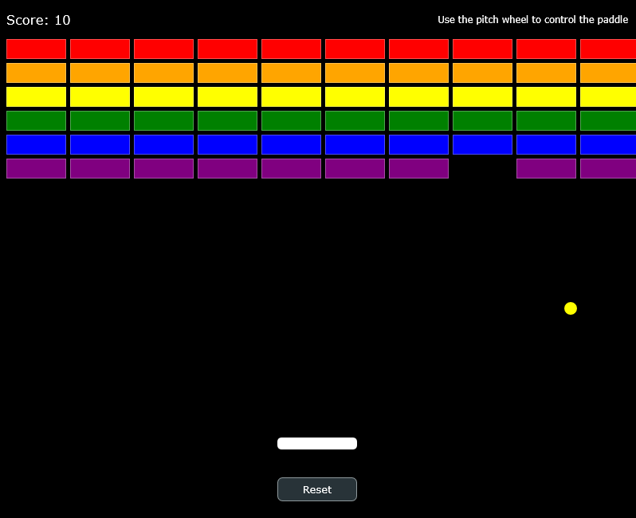

Hello, nice to meet
you.
wheatBread1306
A highly passionate first-year student at Future University Hakodate, developing audio plugins using the JUCE framework.
About Me
I'm a first-year student studying computer science at Future University Hakodate.
Currently, I'm working with C++ and the JUCE framework to develop unique, high-quality audio plugins that expand creators' musical expressions.
Selected Works

Cathode Drift
A custom distortion plugin that applies independent DC offsets to the left and right channels, processing the signal through a clipper.